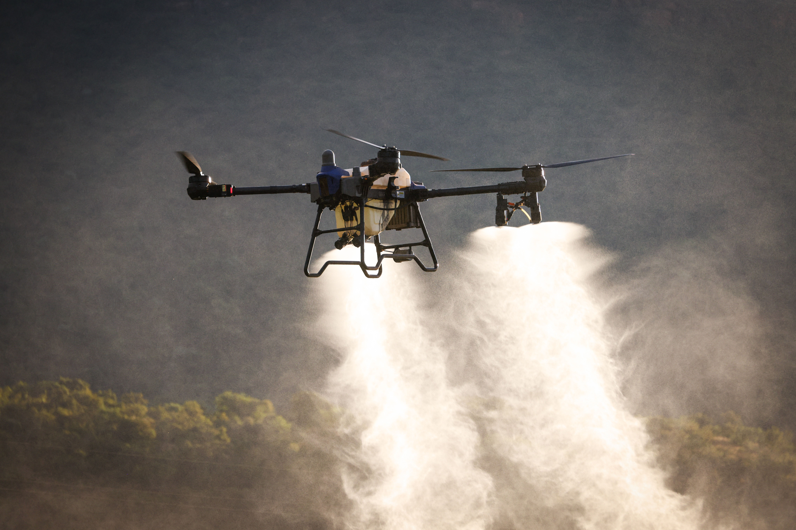
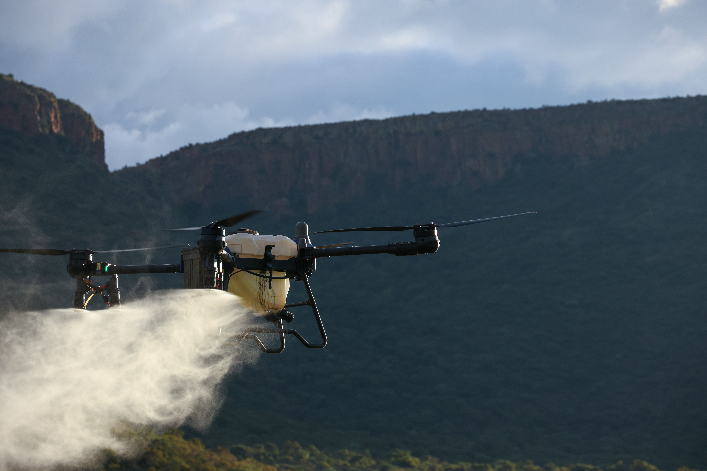

田内沉积占比
88.98%
AeroGuard 帮植保无人机对抗风的干扰：先算出药液会飘到哪里，再主动把它引回田里——目标是少浪费、少污染，扩大可安全作业的风速窗口。
以下为 2.0 m/s 横风基线仿真 · 作为衡量 AeroGuard 效果的参照组
2.0 m/s 基线工况；视窗 120 × 80 m，0.3 m 网格（400 × 267 格），高斯核 σ = 0.45 m。
数据来源：团队自研喷洒仿真模型。仿真用于方案分析，实际效果仍需田间试验验证。
风会把细小液滴吹离作物，落进土壤、水体和周边植物——既污染环境，又白白浪费药液。液滴越细，越容易被吹走。
风速从 2.0 升到 3.0 m/s，飘出田外的药液从 10.12% 增至 15.60%。
按液滴下落模型计算，最细液滴为理论值。
飘出去的多是细小液滴：数量多，药量却少，两者要分开看。
同一航线、喷头与滴谱，仅改变定常横风；“田内落点质量” = 100% − 出田质量，与网格口径的田内沉积占比不同。
| 风速 | 田内落点质量 | 出田质量 | 最远落点 | 峰值 g/m² | DB37/T 3940 |
|---|---|---|---|---|---|
| 0.5 m/s | 0.3009 | 合规 | |||
| 1.0 m/s | 0.3396 | 合规 | |||
| 2.0 m/s | 0.3207 | 合规 | |||
| 3.0 m/s | 0.3194 | 临界 | |||
| 4.0 m/s | 0.2970 | 慎飞 | |||
| 5.0 m/s | 0.2642 | 慎飞 | |||
| 6.0 m/s | 0.2474 | 超国标 | |||
| 8.0 m/s | 0.2512 | 超国标 |
风越大，留在田内的药液越少、飘得越远；3.0 m/s 时跌破 85% 达标线，恰好是 DB37/T 3940-2020 的“慎飞”边界。
| 粒径 | 终端速度 | 落下 2.5 m 用时（对数刻度） | 2.0 m/s 风下漂移 |
|---|---|---|---|
| 20 µm | 0.0119 m/s | ≈ 421.2 m | |
| 50 µm | 0.0697 m/s | ≈ 71.7 m | |
| 100 µm | 0.2378 m/s | ≈ 21.0 m | |
| 200 µm | 0.6706 m/s | ≈ 7.5 m | |
| 300 µm | 1.1167 m/s | ≈ 4.5 m | |
| 400 µm | 1.5461 m/s | ≈ 3.2 m | |
| 600 µm | 2.3472 m/s | ≈ 2.1 m |
漂移距离 = 风速 × 下落时间（不计蒸发）；高亮行接近平均粒径。
加装在植保无人机上的轻量模块：感知风向 → 计算修正 → 偏转喷嘴 → 液滴回到目标。目前已完成仿真与航线规划，用来量化飘移、指导修正。

加装后（设计目标）：引导回田
无导流（基线仿真）：出田 10.12%| 作业环节 | 方案方法 | 基线工况输出 |
|---|---|---|
| 航线规划 | 根据喷幅自动算出最少趟数，均匀铺设往复航线。 | 喷幅 8 m · 10 趟 · 实际间距 6 m · 实际重叠 25% |
| 液滴与风漂 | 模拟上万颗液滴在风中的下落与飘移。 | 12,000 颗代表液滴 · 横风 2.0 m/s · 出田质量 10.124% |
| 沉积评估 | 统计田内落药量，找出漏喷区域，检查喷得是否均匀。 | 田内沉积 88.98% · 漏喷块率 12.69% · CV 45.9% |
| 结果校核 | 两种独立方法交叉核对，26 项读数按显示精度一致。 | 26 / 26 项显示值一致 · 两种路径出田质量均为 10.124% |
航线自东向西推进，首末趟压住田界、喷洒不越界，两端各留 3 m 掉头。
| 趟号 | 横向位置 x | 田块内位置（西 → 东） | 飞行方向 | 喷洒长度 |
|---|---|---|---|---|
| 01 | +27.0 m | ↑近端 → 远端 | ||
| 02 | +21.0 m | ↓远端 → 近端 | ||
| 03 | +15.0 m | ↑近端 → 远端 | ||
| 04 | +9.0 m | ↓远端 → 近端 | ||
| 05 | +3.0 m | ↑近端 → 远端 | ||
| 06 | −3.0 m | ↓远端 → 近端 | ||
| 07 | −9.0 m | ↑近端 → 远端 | ||
| 08 | −15.0 m | ↓远端 → 近端 | ||
| 09 | −21.0 m | ↑近端 → 远端 | ||
| 10 | −27.0 m | ↓远端 → 近端 |
| 作业时长 tTask | |
| 99% 质量落地 t99 | |
| 最后一颗落地 t100 |
最后 1% 的药液来自极细液滴，要飘 200 秒以上才落地。
以 2.0 m/s 风速为例，把航线、飘移预测和达标判断放进一块飞手一眼看懂的面板。
已完成：仿真模型与参数计算器。下一阶段：导流件样机与实机挂载测试。
用连续的物理因果链解释飘移，再用沉积网格和独立核算路径检查模型输出。
固定随机种子和独立随机流，抽样粒径、发射时刻与阵风，形成可重复的基线模拟。
喷幅和重叠率自动生成往复航线，再把液滴落点映射到沉积网格。
仿真模型与参数计算器的 26 项读数按显示精度一致；粒子法和网格法的出田质量互相吻合。
Gamma 分布抽样 12,000 颗代表液滴，随机种子 7；发射时刻、阵风、喷杆偏移各用一条独立随机流。
独立计算值与页面显示值按显示精度逐项比较，不一致项 0 / 26。
| 读数 | 独立计算 | 页面显示 | 判定 |
|---|---|---|---|
| 趟数 N | 10 | 10 | OK |
| 实际间距 d [m] | 6 | 6.000 | OK |
| 实际重叠 ov [m] | 2 | 2.000 | OK |
| 作业跨度 LROUTE [m] | 46 | 46.0 | OK |
| 喷洒里程 Ltot [m] | 400 | 400.0 | OK |
| 飞行里程 flyLen [m] | 460 | 460.0 | OK |
| 作业时长 tTask [s] | 133.33333 | 133.333 | OK |
| t99 [s] | 135.48133 | 135.481 | OK |
| t100 [s] | 343.70882 | 343.709 | OK |
| 峰值沉积 [g/m²] | 0.32071031 | 0.3207 | OK |
| 田内沉积总量 [g] | 73.443211 | 73.443 | OK |
| 均匀度 P95/P50 | 4.3606816 | 4.36 | OK |
| 药带宽度 [m] | 51.3 | 51.3 | OK |
| 读数 | 独立计算 | 页面显示 | 判定 |
|---|---|---|---|
| 出田滴数 [%] | 41.808333 | 41.81 | OK |
| 出田质量 [%] | 10.124105 | 10.124 | OK |
| 最远漂移 [m] | 451.86193 | 451.86 | OK |
| 守恒校验 | 0.99997336 | 0.999973 | OK |
| 漂移沉积总量 [g] | 8.2784261 | 8.278 | OK |
| 漂移占施药量 [%] | 10.124105 | 10.12 | OK |
| 漂移最远点 [m] | 452.13555 | 452.1 | OK |
| 漂移覆盖面积 [m²] | 7925.04 | 7925.0 | OK |
| 田内沉积占比 [%] | 88.983381 | 88.98 | OK |
| 漏喷块 [%] | 12.692308 | 12.69 | OK |
| 漏喷块数 | 33 | 33 | OK |
| 田内总块数 | 260 | 260 | OK |
| 均匀度 CV [%] | 45.902775 | 45.9 | OK |
漏喷块判据：3 m 方块剂量低于中位数 0.28385 g 的 0.5 倍。覆盖达标线：田内沉积 ≥85% 且漏喷块 <25%，基线工况两项均达标。
精准植保直接关联多项联合国可持续发展目标，每项收益都对应可在田间测量的指标。
环境、健康与减药收益将以对照田间试验数据为准进行报告。
共同目标：让植保喷洒更透明、可复核，并经得起田间检验。
护住每一寸绿意，
让每一次喷洒更有据可依。
用透明的模型把液滴、风和航线连起来，让每次喷洒都能看见覆盖、比较风险。
项目从一个喷洒参数计算器起步，逐步扩展为涵盖液滴、航线、飘移与覆盖分析的完整工具，并用独立计算交叉核对。
职责待定
职责待定
职责待定
职责待定
职责待定
明确作物、目标问题、试验边界、合作方和阶段交付。
维护模型参数、沉积指标、风速扫描和结果复核记录。
整理喷幅、航线间距、飞行参数及合规安全的试验流程。
维护试点记录、SDG 证据链、双语材料和阶段汇报。
确认基线参数、指标口径和当前证据边界。
围绕风速、粒径和航线参数做敏感性分析。
完善安全、采样、对照与数据记录方案后再开展试验。
用实测误差更新模型，汇报效果与未解决问题。